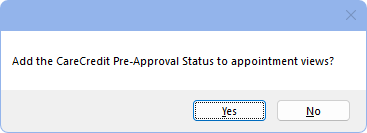

CareCredit Setup
CareCredit is a third-party credit card for financing health care expenses.
In Setup, Program Links, double-click CareCredit from https://www.carecredit.com/.

CareCredit integrates into multiple areas of Open Dental.
Set up the CareCredit program link to begin using the integration.
- Enabled: Check to enable CareCredit.
- Hide advertising: If not using CareCredit, check to hide CareCredit buttons in the Treatment Plan Module, Account Module, and Payment window.
- Pre-Approval Status Patient Field: The field used to display Batch Quickscreen Approval Statuses.
- Pre-Approval Amount Patient Field: The field used to display the patient's pre-approval amount.
- Available Credit Patient Field: The field used to display the patient's available credit.
- Merchant number by provider: Only displays when clinics is enabled. Determines how the Merchant Number (provided by CareCredit) is entered.
- Checked: Removes Merchant Number box below. Enter the Merchant Number for each provider in the Providers Edit window.
- Unchecked: Merchant Number is not by provider. Enter the Merchant Number in the box below.
- Clinic: Only displays if Clinics is enabled. Select the clinic the settings apply to.
Clinic Settings: This heading only appears when clinics is enabled. When clinics is not enabled, these settings relate to the practice. When clinics is enabled, these settings relate to the selected clinic.
- Payment Type: The default Payment Type used for CareCredit transactions.
- If the Preference, Payments prompt for Payment Type, is enabled, users must manually select a payment type.
- Manage: Only displays after CareCredit has been enabled. Opens the CareCredit Manage portal. Allows offices to set promotions.
- Merchant Number: Unique 16-digit ID for the office. If using clinics, this number is the same for all clinics. This number is provided by CareCredit.
- Quickscreen Feature: Quickscreen is a way to check if patients with upcoming appointments have been pre-approved for CareCredit. See Batch Quickscreen below for additional details.
- Off: Disable the Quickscreen feature. Quickscreen Settings are hidden.
- On (with Bal): Enable the Quickscreen feature. Only considers patients with an estimated patient portion greater than $1.
- On (no Bal): Enable the Quickscreen feature. Considers all patients, regardless of estimated patient portion for the appointment.
- Lookup Only: Check only to see if a patient is a current CareCredit cardholder and retrieve the available credit, if any. Does not check for eligibility or pre-approval status.
- Number of days out to check for pre-approvals for future appointments: How many days in the future to check for pre-approvals. The default is 2. Options are 2, 3, or 4.
- When Lookup Only is selected, this changes to Number of days out to check for lookups for future appointments.
The eConnector and Open Dental Service are required to utilize CareCredit and receive CareCredit Alerts.
Click Save to save changes. If Quickscreen is enabled, and CareCredit Approval Status has not been added to an Appointment View, a prompt displays to add it.

- Click Yes to quickly add the CareCredit Approval Status to Appointment views. The Appointment Views window opens.
- Click No to continue without updating the Appointment Views. Views can be edited at any time.
Batch Quickscreen
Batch Quickscreen is a CareCredit feature that pre-approves patients for financing. When enabled, Batch Quickscreen automatically attempts to pre-approve patients for their estimated appointment fees (rounded to the nearest dollar) prior to their appointment.
- Only patients that have not had any completed CareCredit transactions (purchase/refunds/Quickscreen) in the last 60 days are sent for Quickscreen.
- Users must accept or decline the pre-approval before the patient can process a CareCredit transaction. Right-click on the appointment to accept or decline.
- If Merchant number by Provider is checked, the provider on the appointment must have a merchant number entered.
When enabled, a webservice checks if a patient is pre-approved. Batch Quickscreen is run at 7:20 AM (local to the practice) each morning. If we do not get a response back from CareCredit when running Batch Quickscreen, the batch has a pending status. Open Dental continues trying for a response. If no response is received after 24 hours, the batch expires.
QuickScreen is enabled by default, but can be turned off be selecting Off. Patients cannot individually opt out of QuickScreen.
When enabled, minor patients (under the age of 18) are processed using the guarantor of the family. When screened, the pre-approval status still displays on the patient, even if the screening was done on the guarantor. If the minor patient is not in a family, the patient is not screened, and a BatchError log in the CareCredit Transaction window is added.
The following information is required for patients to be screened: First Name, Last Name, Address, Zip Code, City, State, and Phone Number. Email, SSN, and Date of Birth are recommended but not required. The last 4 digits of the SSN is required when Lookup Only is selected.
A patients Quickscreen status can be viewed in the Patient Information area of the Family Module or by adding the CareCredit Approval Status to the Appointment view.
Quickscreen statuses:
- Pre-Approved: Patient has been pre-approved. An application for this patient can be sent for financing.
- Unable to Pre-Approve - Refer Patient to Credit Application: CareCredit is unable to pre-approve this patient.
- Cardholder: The patient is a current CareCredit cardholder.
Closed Accounts
When an office closes their account with CareCredit, their Merchant Number is automatically updated with an x when Batch Quickscreen is attempted. This lets Open Dental know the account is closed and not to allow transactions.
To remove CareCredit buttons from different areas of the program (e.g., Treatment Plan and payments), uncheck the Enabled box.
If an account has been closed, and the bridge has not been disabled, a warning appears in the CareCredit Setup window, in the CareCredit Action window, and when attempting to make a CareCredit payment.
Troubleshooting
Microsoft WebView2 is required to use CareCredit. If not already installed, users are prompted to install WebView2 the first time CareCredit is opened. Installation only needs to happen once on each workstation.